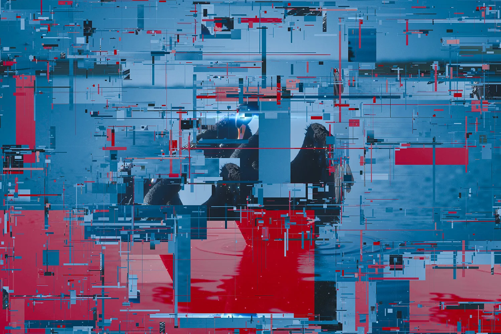
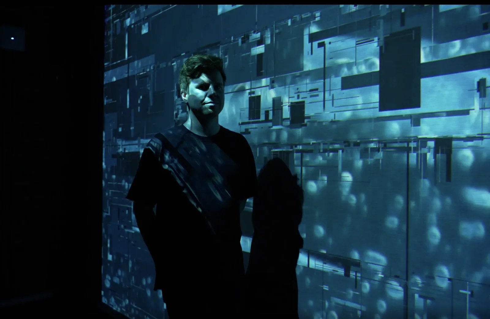

Flow of Imperfection · «Поток несовершенства»
Saint Petersburg · Zifergauz Gallery, New Holland · 18 September — 19 October 2025
Creator of The Natural Error of the Black Swan’s Appearance. Editing of the entire exhibition video programme and on-site testing. Participation with the Berezovy Prompt art group.
Flow of Imperfection explored errors in artificial intelligence: glitches, distorted forms and unexpected generations. The Berezovy Prompt project was shown at Zifergauz in collaboration with the D/G/TAL RA/N festival.
My work The Natural Error of the Black Swan’s Appearance is about an event that seems sudden, although it emerges from a long chain of causes. In striving for order, we create the conditions for chaos ourselves; an error becomes a natural continuation of our actions.
My Role in the Exhibition
I edited the full video programme from the works of all the group’s artists. Before the opening, I regularly visited Zifergauz to test it on site and prepare it for presentation.
Photos and Images



